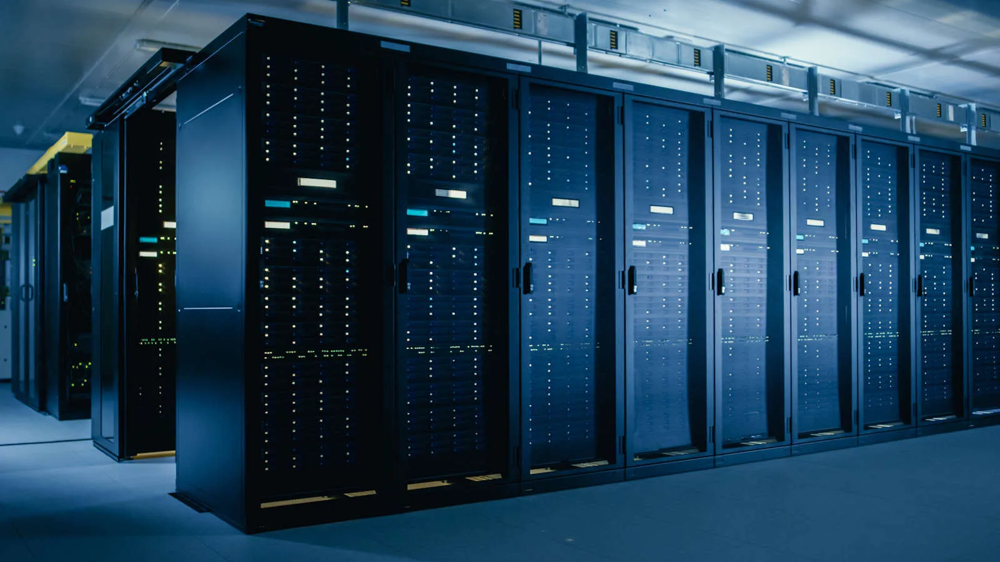

Portfolio #6
Comparative Study on the Different Types of Computer
Explore the different types of motherboards, focusing on their specifications, compatibility, and roles in optimizing the performance and functionality of various computing systems.
INTRODUCTION
Due to the diversity of computer systems, there are now many different kinds of computers, each designed for a particular use case or function. These include workstations for high-performance tasks, mainframe computers for processing large amounts of data, minicomputers for small businesses, servers for hosting and resource management, microcomputers, also referred to as personal computers, for daily use (Singh, 2024), and many more . This portfolio is to examine the unique traits and uses of the different types of computes, highlighting their contributions to the development of contemporary technology.

Discussion
A computer system is a comprehensive configuration of peripheral devices, software, and hardware intended for data processing, storing, and retrieval. These systems are essential for carrying out a variety of tasks, ranging from straightforward computations to intricate simulations. Fundamentally, a computer system works by interacting with its parts to carry out commands in an efficient and effective manner (Wang, 2020).
Table 1 provides a comparative comparison of different computer types, including their specifications, including name/brand, CPU, RAM, processing speed, and field of usage, in order to better comprehend the diversity of computer systems. On the other hand, Table 2 provides a comprehensive overview of each type's real-world applications by including explanations, illustrations, and examples of popular usage.

| Type | Name/Brand | Build | CPU | Memory | Processing Speed | Calculating Power | Working Principle | Energy Consumption | Field of Use |
|---|---|---|---|---|---|---|---|---|---|
| Supercomputer | IBM Summit | 9,000 sq. ft. (entire setup) | IBM Power9; 3.1 GHz clock speed; Multi-core with 22 cores per CPU; 10 billion transistors; High FSB and L3 cache | 2.4 million GB DDR4 | 4,608 nodes with 2 CPUs per node | 200 petaFLOPS; 1 trillion MIPS | Processes information using parallel computing across thousands of CPUs, accelerating tasks through inter-node communication. | 1–10 megawatts on average | Scientific research, quantum mechanics, climate modeling, and large-scale simulations (Scenario: simulating weather systems or protein folding experiments). |
| Mainframe Computers | IBM z15 | 19-inch rack-mounted chassis | IBM z15 processors; 5.2 GHz clock speed; Multi-core with 12 cores; 33 MB L3 cache | Up to 40 TB DDR4 RAM | Up to 190 processor cores per system | Up to ~12,000 MIPS; Moderate GFLOPS performance for batch transaction loads | Operates via centralized processing, optimized for high availability, fault tolerance, and large-scale data transactions. | ~5–10 kW | Banking (Scenario: transaction processing), insurance systems, and enterprise-level applications requiring 24/7 uptime. |
| Mini Computers | HP 3000 | 19 inches wide, 25 inches high, and 36 inches deep | HP Precision Architecture CPUs; ~2.2 GHz clock speed; Moderate multi-core; Integrated cache | 32 MB to several GB | Varies based on user setup | ~300 KIPS; ~20 MFLOPS for multi-user tasks | Uses multi-user environment architecture, enabling concurrent processing of multiple tasks by sharing resources. | ~1–2 kW | Small businesses (Scenario: inventory control, order processing) and industrial systems requiring reliable multi-user access. |
| Server | Dell PowerEdge R740 | 2U rack server (3.5 in x 17 in x 26 in) | Intel Xeon Scalable CPUs; 3.8 GHz clock speed; Multi-core with up to 28 cores; 1.5 MB cache per core | Up to 3 TB DDR4 | Varies based on server configuration | ~10 TFLOPS for GPU tasks; ~10,000 MIPS for CPU-intensive workloads | Implements client-server architecture to provide resources and services to client devices over a network. | ~300–800 W per server | Web hosting, cloud-based applications (Scenario: hosting websites or running virtual machines for businesses). |
| Workstations | HP Z8 Workstation | Tower form factor (6.5 in x 21.7 in x 17.5 in) | Intel Xeon W; 4.1 GHz clock speed; Multi-core with up to 28 cores; 66.5 MB L3 cache | Up to 1.5 TB ECC RAM | Up to 1.5 TFLOPS for GPU workloads | ~2,000–5,000 MIPS; Robust TFLOPS for 3D simulations and rendering | Designed for single-user tasks, optimized for high-performance workloads such as 3D rendering or engineering simulations. | ~300–600 W | Graphic design (Scenario: creating CGI for movies) and engineering simulations (Scenario: stress-testing materials in CAD software). |
| Micro Computers | Apple MacBook Air | 11.97 in x 8.36 in x 0.63 in | Apple M1; 3.2 GHz clock speed; 8-core CPU, 7-core GPU; Unified L2 cache | Up to 16 GB LPDDR4X RAM | Moderate processing for personal use | ~0.5 TFLOPS for GPU; ~1,000 MIPS for general tasks | Processes information with an integrated SoC (System on Chip), optimizing power and performance for everyday computing. | ~30 W | Personal use (Scenario: word processing, browsing), education (Scenario: running coding environments for students). |
| Type | Sample Image | Description | Usage |
|---|---|---|---|
| Supercomputer |
- Supercomputers are the most advanced computers available today, built to push the boundaries of power, size, technology, and affordability (Bell, 2015). - They were created to address "grand challenge" issues in science and technology that call for enormous amounts of processing power. - Supercomputers quickly and effectively address extremely complicated, large-scale problems (Horne, 2015). |
Gioiosa (2017) state that supercomputers cover a wide range of computationally intensive tasks, such as: - Quantum mechanics - Weather forecasting - Climate research - Oil and gas exploration - Molecular dynamics - Physical simulations |
|
| Mainframe Computers |
- Big, costly computers that can handle hundreds or thousands of users at once (MainframeWiki, 2018a). - Since the 1964 launch of the System/360, mainframes have been renowned for their reliability, stability, and ongoing, evolutionary advancements, which have made them the cornerstone of numerous vital applications (IBM Corporation, 2010). - Able to function as virtual machines and run different operating systems, taking the place of hundreds or even thousands of smaller servers (MainframeWiki, 2018b). - Mainframes are designed to operate continuously, 24 hours a day, seven days a week. |
According to IBM Corporation (2010), mainframes are utilized in: - Banking and finance (customer accounts, transaction processing) - Healthcare and insurance (patient records, claims processing) - Government and public enterprises (payroll, tax processing) - Large corporations (order processing, inventory control) - Web applications (database management, user access) |
|
| Mini Computers |
- Minicomputers are smaller, less expensive, and less powerful than mainframes, but more expensive and more powerful than personal computers (Magoun, 2015a). - They are used for tasks that require moderate processing power, such as handling multiple users and running specific business or industrial applications (Encyclopedia Britannica, n.d.). - It is often employed in environments where mid-range computing power is needed without the expense of larger systems (Magoun, 2015b). |
Longwill et al. (1980) state that minicomputers are utilized in: - Industrial control systems - Manufacturing process controls - Laboratory data processing - Business applications (accounting, payroll) - Small-scale research projects - Mid-sized enterprise computing needs |
|
| Server |  |
- Servers are the core of a network, intended to supply services, information, and resources to clients, or other computer systems, via a network (El Nahas, 2008a). - It organizes, queues, and ranks client requests in a continuous manner. - Servers are designed to be scalable, dependable, and efficient, it guarantees quick data processing and seamless information flow (El Nahas, 2008b). |
According to Zhang Yuhua (2015), servers are utilized in: - Hosting websites and applications - Managing email and communication systems - File storage and sharing - Database management - Running virtual machines and cloud services |
| Workstations |  |
- Workstations are strong, single-person computers intended for scientific and technical uses (Southern Illinois University Carbondale, 2024). - They have top-tier graphics cards and specialized processors, among other high-performance electronics. - For tasks requiring a lot of processing power, it is perfect. |
Workstations are utilized in: - Engineering and architectural design - Video editing and animation - Scientific and mathematical simulations - Software development - Data analysis and visualization |
| Micro Computers |
- Microcomputers are personal computers that are compact, inexpensive, and driven by microprocessors (Wright, 2024). - Desktops, laptops, and tablets are all generally referred to as personal computers, or PCs. - For general tasks like word processing, internet browsing, and multimedia consumption, microcomputers are frequently used. |
According to Warrick (2002), microcomputers are utilized in: - Producing high-quality documents - Creating financial projections and performing spreadsheet analyses - Managing accounting and budgeting activities - Generating graphs and charts - Conducting research through databases - Planning schedules and itineraries - Storing, retrieving, and manipulating documents - Procuring supplies and equipment - Sharing information and printers electronically |
Compare and Contrast
These comparisons are based on information from Geeksforgeeks (2024), BYJU's (2021), and Samiksha (2013) about processor speed, memory capacity, power consumption, minimum, and usage.
Mini Computer
> Processing Speed: Usually expressed in several hundred MIPS (million instructions per second), this processor offers moderate processing capabilities. Ideal for applications in medium-sized businesses.
> Memory Capacity: Supports numerous users and applications at once, ranging from several gigabytes to a few terabytes.
> Power Consumption: Relatively energy-efficient given its capabilities, it uses about 1-2 kW of power.
> Usage:Frequently utilized in medium-sized enterprises for functions like billing and inventory control.
Micro Computer
> Processing Speed: Typically ranges from KIPS (Kilo Instructions Per Second) to a few MIPS, which is lower than that of minicomputers. mostly for easy chores and personal use.
> Memory Capacity: Usually up to 16 GB of memory is supported, which is sufficient for daily personal computing.
> Power Consumption: Low power consumption, usually about 30 watts, makes it perfect for battery-operated personal gadgets or those with low energy needs.
> Usage: Mostly for personal activities like word processing, web browsing, and learning. prevalent in homes and educational institutions.
Workstation
> Processing Speed: Designed for demanding workloads like 3D rendering and scientific simulations, this system offers fast processing rates, frequently reaching multiple TFLOPS.
> Memory Capacity: Usually supports up to 3 TB of DDR4 RAM, which makes it possible to manage a large number of connections and processes effectively.
> Power Consumption: Depending on configuration and workload, power consumption might vary from 500 to 800 watts per unit.
> Usage: Crucial for cloud services, database management, and website hosting in business settings. designed to provide high availability while managing several user requests at once.
Server
> Processing Speed: Similar to workstations, servers have fast processing speeds, particularly when using GPUs for data-intensive workloads.
> Memory Capacity: Able can accommodate up to 1.5 TB of ECC (Error-Correcting Code) RAM, which is essential for managing complicated calculations and big datasets.
> Power Consumption: Because of the high-performance components, it uses 300–600 watts.
> Usage: Applied in domains including scientific research, engineering simulations, and graphic design that demand high-performance computation.